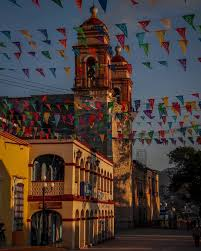

| HISTORIA CURIOSIDADES UBICACION CONTACTO |
 |
Toma su nombre de la cabecera municipal, que fue llamada Heroica merced a una batalla en que se enfrentaron mexicanos y franceses durante la Segunda Intervención Francesa. Su clima predominante es templado, su vegetación es bosque de pino y de encino. Su principal actividad económica es el comercio.
Tlaxiaco es un nombre de origen náhuatl, que proviene de los vocablos tlach, quiahui y -co, de donde tiene el significado aproximado de "Sitio donde llueve en la cancha del juego de pelota". Su nombre en mixteco es Ndijiinu, que significa "Buena vista". Por tanto, ambos idiomas privilegian la posición topográfica del área como un lugar con buena visión y dominio del paisaje.
El municipio comprende las poblaciones de San Pedro Yosotato, el más importante de la región, por su extenso territorio. Le siguen: Santa María Cuquila, San Isidro, San Pedro Llano Grande, Juan Escutia, Plan de Guadalupe, Agua Zarca, San Miguel del Progreso, San Felipe Tindaco, Joya Grande, Ojo de Agua, Mexicalzingo de los Granados. |